La base de datos del juego FIFA 19 contiene información sobre 651 clubes y 18,207 jugadores profesionales. Es importante mencionar que no se encuentra contenido la totalidad de jugadores a nivel mundial, pero permite conocer las características físicas y personales de un grupo de jugadores destacados. Esta primera parte del trabajo realizó una serie de pasos para lograr tener una base de datos completa.
El primero de los basos consisitó en poblar el Data Frame con medias de las columnas numéricas, así como texto en las columnas no numéricas para evitar borrar celdas con valores nulos. Posteriormente, se realizaron algunos cambios en los tipos de datos que permitiera una correcta manipulación de la información. Finalmente, se generaron nuevas columnas con información que sería relevante y necesaria para poder realizar el resto de los elementos del trabajo y análisis que se presentará en las siguientes secciones.
El primer gráfico generado se basa en la distribución de las posiciones de cada jugador contenido en el juego. En este sentido, la posición con mayor número de resgistros son los delanteros 'ST', seguido de porteros 'GK' y defensores centrales 'CB'.
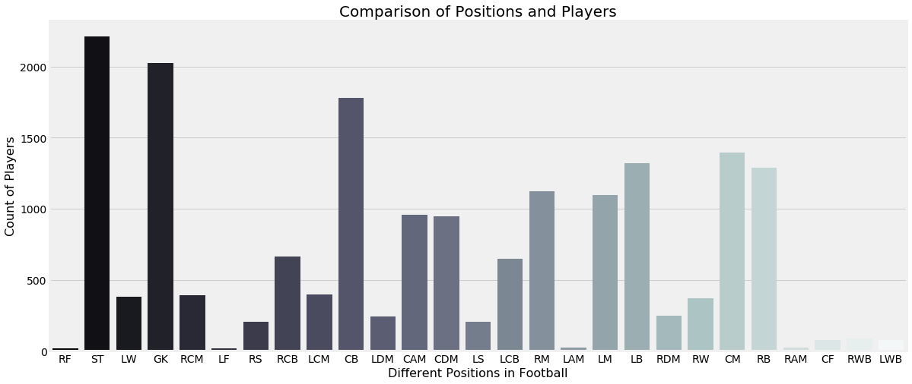
Podemos observar que el pie preferido por los jugadores dentro del juego es el derecho, a diferencia de los jugadores zurdos en el juego. Esto no necesariamente implica que utilicen exclusivamente ese pie, simplemente se sienten más cómodos al realizar un pase, recepción o un tiro.
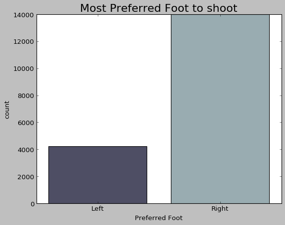
Este gráfico nos muestra que la mayoría de los jugadores realizan, en promedio, el mismo esfuerzo al atacar o defender. Esto es lógico observarlo debido a que los jugadores cubren una posición en particular y, a menos que el equipo tuviera algún jugador lesiondo o expulsado, dicho esfuerzo se incrementaría para cubrir la vacante faltante. Si este no fuera el caso, ningún jugador se agotaría en el campo de juego intentando cubrir más de una posición.
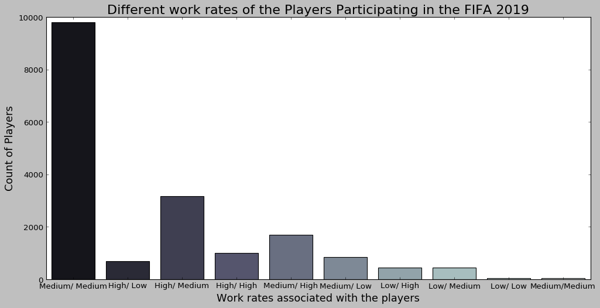
La diversidad de países presentes en el juego coincide con lo que observaríamos en la realidad. Sin embargo, es importante destacar que el juego se encuentra sesgado debido a que por razones comerciales, la cantidad de equipo contenidos se encuentran concentrados en Inglaterra, Alemania, España, Argentina, Francia, Brasil e Italia.
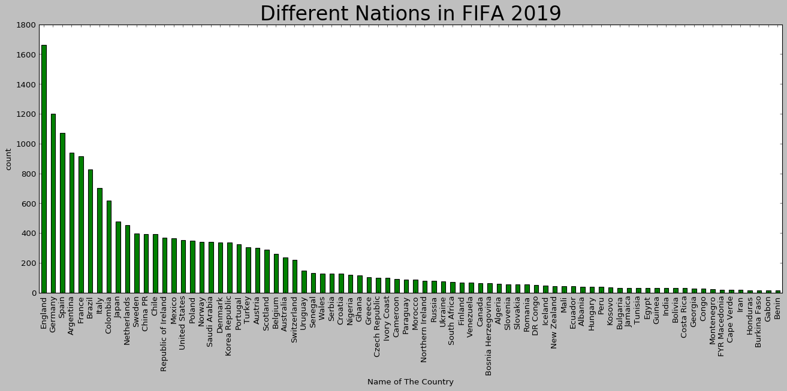
La distribución de la masa salarial se concentra en unos cuantos jugadores, los cuales denominaremos Súper Estrellas, por lo sin importar el país, posición o características físicas hace que pertenecer a este grupo genere una brecha salarial de cada 6 a 1 respecto un jugador promedio.
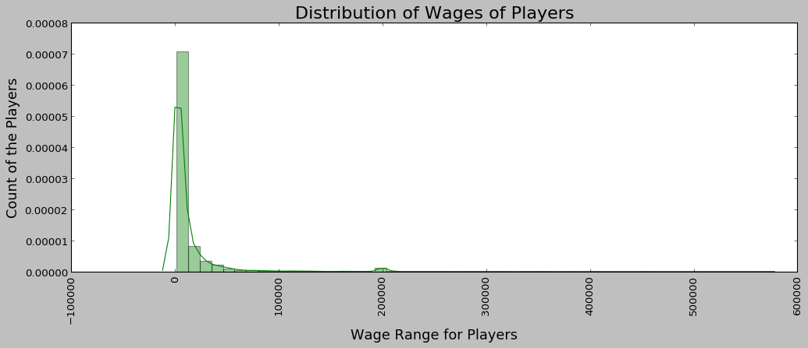
Sobre el peso de los jugadores podemos observar que en promedio se encuentran en un rago de 70 a 80 kgs, lo cual podría, y con base en la estatura de los mismos, podría suponer una ventaja el ser más delgado que fornido para practicar este deporte.
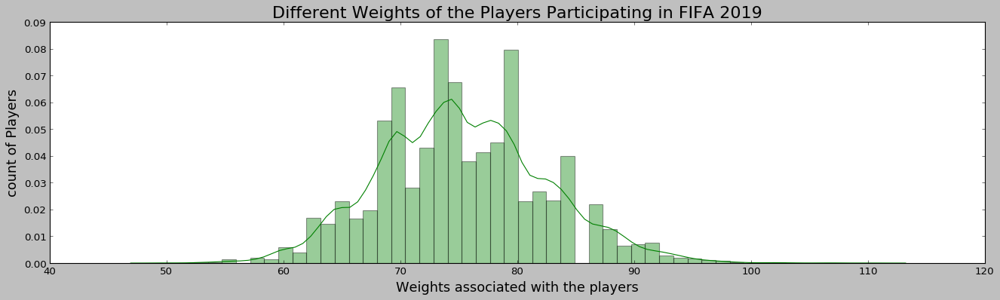
En cuanto a la altura de los jugadores, podemos observar que la mayoría de los jugadores tiene una estatura menor al 1 metro 60 cms y realmente son pocos los jugadores que tiene una estatura cercana a los 2 metros.
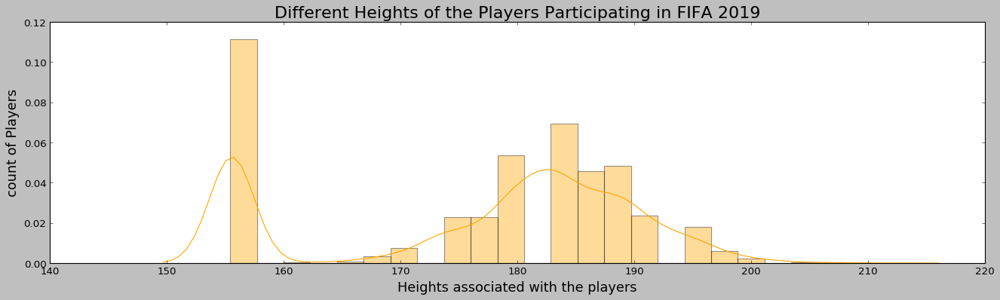
La edad de los jugadores está principalmente concentrada en las edades de 20 a 30 años, aunque con la presencia de algunos jugadores muy jóvenes (16 años) o algunos más longevos (43 años) que están activos en la base de datos del juego.
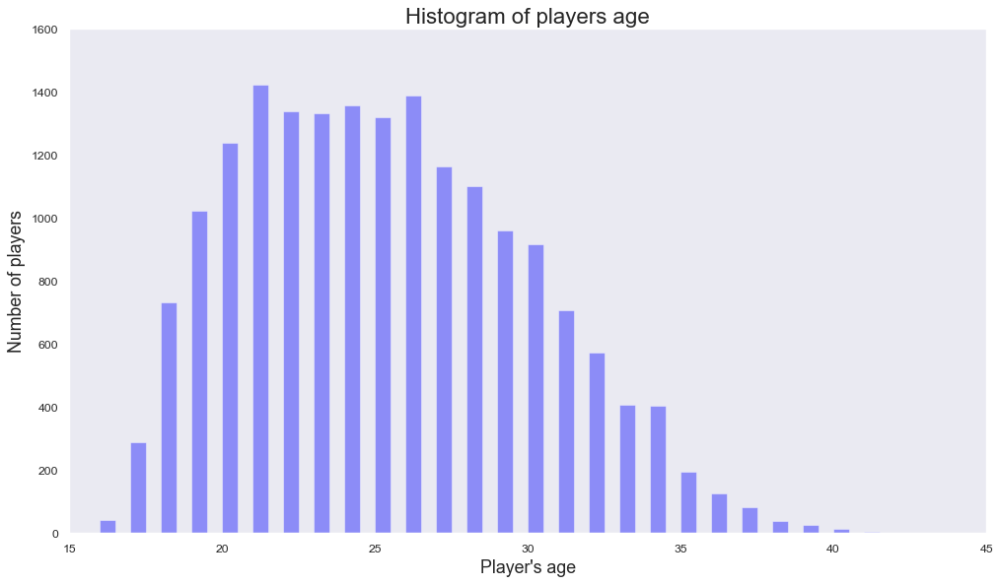
La siguiente gráfica muestra la correlación existente entre las variables contenidas en el DataFrame. Podemos observar que las características contempladas como habilidades tienen un alto grado de correlación.
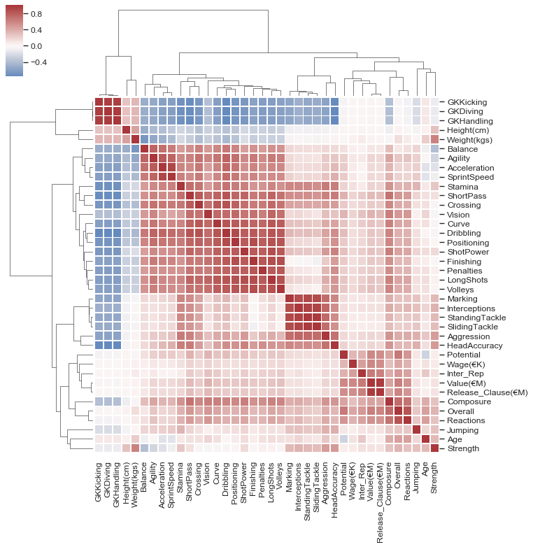
La siguiente gráfica muestra qué tan equilibrado en cuanto a habilidades está cada una de las posiciones del juego. En particular, los jugadores que juegan como laterales parecen estar mucho más equilibrados en cuanto a sus habilidades. Esto hace sentido por la forma propia de la posición que participa como un pivote que permite ayudar al ataque o defender en caso de ser necesario.
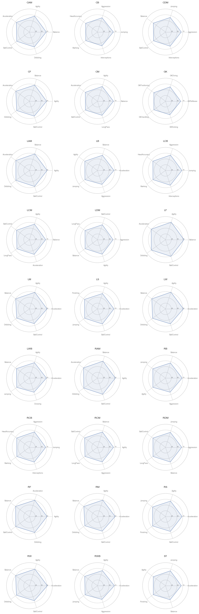
La siguiente gráfica muestra que en realidad existe una gran cantidad de jugadores extranjeros en cada liga. Lo anterior genera una competencia constante con los jugadores locales y, en algunos casos, permite generar una dinámica donde el nivel competitivo bastante elevado y encontremos ligas con partidos extremadamente interesantes y entretenidos para el público.
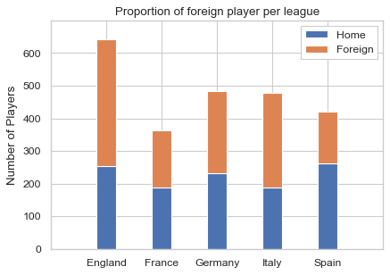
El equipo más valioso dentro de la base de datos, lo cual está totalmente en línea con lo que podemos observar en la realidad, es que el Real Madrid, Barcelona, M. City, Juventus y B. München son los equipos más valiosos contemplando el valor de mercado de los jugadores que componen su plantilla.
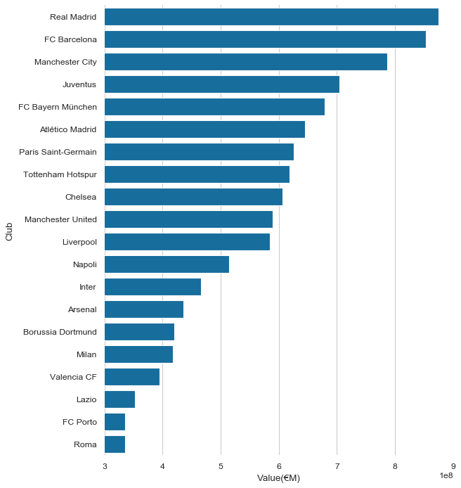
El equipo más valioso dentro de la base de datos podemos observar que la Juventus, Napoli, Inter, Real Madrid y Milán son los equipos con mayor calidad. Esto no parece tener correspondencia con la realidad, pero quizás los jugadores Súper estrellas hacen que se pondere de diferente forma esta variable. Lo anterior considerarando la valoración total de los jugadores que componen su plantilla.
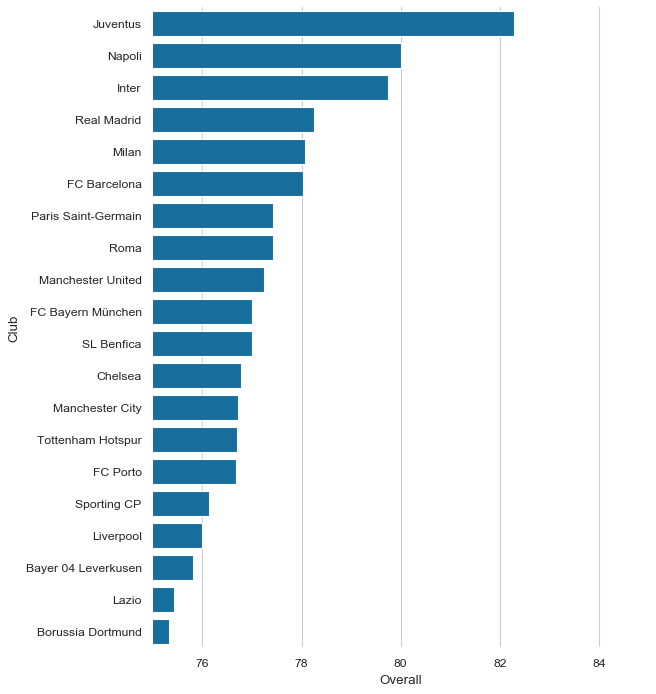
El equipo más valioso dentro de la base de datos podemos observar que la Juventus, Barcelona, Real Madrid, M. City y Bayern München son los equipos con mayor calidad. Esto no parece tener correspondencia con la realidad, pero quizás los jugadores Súper estrellas hacen que se pondere de diferente forma esta variable. Lo anterior considerarando el potencial de los jugadores que componen su plantilla.
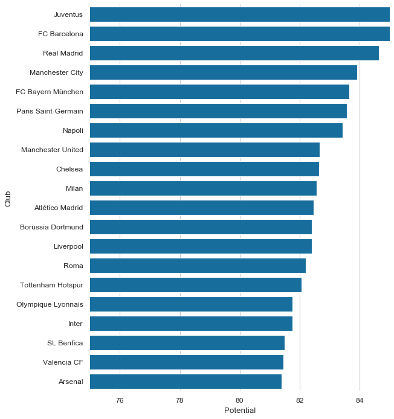
Como podemos ver en estos gráficos, los jugadores con un perfil más ofensivo son los más costosos y demandados por los clubes a diferencia de aquellos en una posición de defensa.
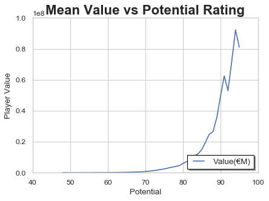
Se podría considerar que al ser los jugadores que más rachas "negativas/positivas" experimentan, además de que muy posiblemente la cantidad de playeras, anuncios y elementos de venta que pueden aprovechar los clubes es mucho mayor que de una posición defensiva.
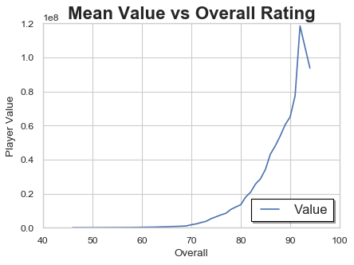
Por otra parte, es posible observar que la valoración total que tiene un jugador incrementa su valor de mercado y que dicho valor de mercado alcanza su tope cerca de los 26-27 años y después comienza un descenso. Lo cual tiene lógica con lo que los clubes esperan que es aprovechar los mejores años de sus jugadores y después renegociar un salario menor a cambio de minutos de juego, lo que muchas veces produce retiros anticipados.
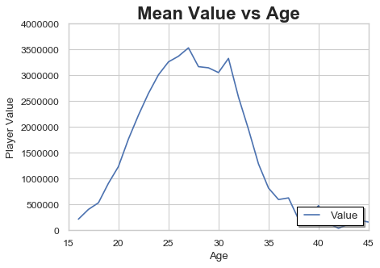
Finalmente, la última gráfica nos muestra que a medida que transcurren los años, tanto la valoración total como el potencial alcanzan una convergencia, lo que podríamos denominar la cúspide profesionalde los jugadores cercano a los 29 años. A partir de este momento, las condiciones físicas se estabilizan y comienzan con un descenso paulatino que es normal y perfectamente observable en los jugadores
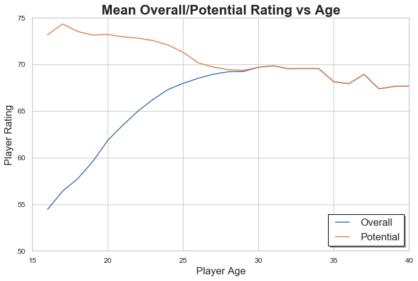